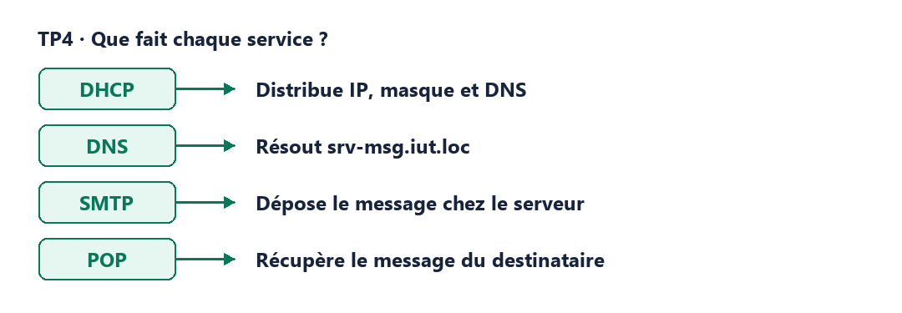

Comprendre le cours
1. Trouver le service derrière une adresse
Une adresse IP identifie l’extrémité réseau. Un port aide le système à remettre les données au service qui les attend. Sur une connexion TCP, on distingue une source et une destination, avec une IP et un port de chaque côté. Le client prend souvent un port temporaire. Le serveur écoute sur le port configuré pour le service.
UDP envoie des datagrammes indépendants. Il ne fournit pas lui-même les garanties de remise et d’ordre de TCP. TCP ouvre une connexion et fournit un flux ordonné. Les numéros de séquence, les acquittements et la retransmission permettent de retrouver des données perdues. Une application au-dessus de TCP doit définir comment délimiter ses propres messages.
L’ouverture TCP se lit SYN → SYN,ACK → ACK. Chaque côté convient de son numéro initial. À la fermeture, FIN indique qu’une extrémité a fini d’envoyer. Une connexion interrompue peut être réinitialisée par RST. Un ping réussi prouve que la cible a répondu à ICMP. Pour vérifier l’application, il faut aussi tester son port et son protocole.
2. Lire une requête HTTP
Le client demande une ressource par une méthode et un chemin, par exemple GET /index.html. Les en-têtes donnent le contexte, notamment Host. Le serveur renvoie un statut, des en-têtes et éventuellement un corps. 200 indique un succès, 404 une ressource introuvable dans ce contexte et 500 un problème interne côté serveur.
Essaie curl -i http://serveur-du-tp/ dans la maquette. Lis la première ligne et le type de contenu, puis le HTML reçu. HTTPS utilise TLS pour protéger l’échange. Pour un service moderne, le navigateur peut aussi négocier d’autres versions de HTTP. Le TP de lecture porte sur les champs HTTP visibles de la version testée.
3. Distribuer les réglages réseau avec DHCP
Le serveur DHCP gère un pool, l’ensemble des adresses qu’il peut attribuer. Le bail fixe la durée de l’attribution. Le client peut aussi recevoir le masque, le routeur par défaut et le DNS. Pour une première attribution, suis Discover → Offer → Request → Ack. Un renouvellement peut commencer directement par un Request.
Les ports UDP usuels sont 67 côté serveur et 68 côté client. Une diffusion du client reste dans son réseau local. Si le serveur est derrière un routeur, un relais DHCP peut transmettre la demande au serveur et lui fournir le contexte pour choisir le bon réseau. Un serveur qui répond mais envoie la mauvaise option DNS produit une panne différente d’un serveur qui ne répond pas.
4. SSH, transfert de fichiers et confiance
SSH donne accès à une session distante chiffrée. À la première connexion, compare l’empreinte de la clé d’hôte à une valeur fiable du labo. Cette clé identifie le serveur. La clé de l’utilisateur sert à prouver son identité au serveur. Pour une authentification par clé, le client conserve sa clé privée. La partie publique va sur le compte serveur autorisé.
SFTP utilise SSH. FTP ouvre une connexion de contrôle puis une connexion de données. En mode actif, le serveur initie la connexion de données. En mode passif, le client se connecte au port de données annoncé par le serveur. Cela permet d’expliquer certains cas où la connexion FTP fonctionne alors que le listage ou le transfert échoue.
5. Répondre à une question DNS
Le résolveur reçoit la question du poste. Il peut réutiliser une réponse en cache ou interroger d’autres serveurs jusqu’à l’autorité de la zone demandée. Une zone rassemble les données dont un serveur a la responsabilité. Le TTL exprime la durée pendant laquelle un résultat peut être conservé.
| Type | Question à laquelle il répond |
|---|---|
| A, AAAA | Quelle adresse IPv4 ou IPv6 correspond à ce nom ? |
| CNAME | Quel autre nom ce libellé désigne-t-il ? |
| MX | Vers quel serveur envoyer le courrier de ce domaine ? |
| NS, SOA | Quels serveurs décrivent la zone et quels sont ses paramètres d’autorité ? |
| PTR | Quel nom est associé dans la zone inverse ? |
Pose la question au serveur voulu. nslookup srv-msg.iut.loc 192.168.1.253 vérifie la résolution prévue dans le TP. Si ce test réussit et que le nom échoue dans l’application, vérifie quel résolveur le poste utilise par défaut.
6. Suivre un mail de l’envoi à la lecture
SMTP transporte le mail vers un serveur. POP et IMAP servent à consulter la boîte. POP permet de récupérer les messages. IMAP permet de garder dossiers et état synchronisés côté serveur. Le TP utilise deux clients avec POP et SMTP. Il faut que la configuration IP et la résolution DNS fonctionnent avant le test du mail.

Du cours aux TD et TP
Questions TD & TP
TD1 · Valider que le client reçoit l’adresse, le masque et le DNS
Démarche reconstituée à partir du compte rendu. Vérifier la configuration du serveur DHCP de la maquette et prouver qu’un client obtient un bail.
- Sur la VM serveur, fixe l’IPv4 de l’interface du TP hors du pool. Dans la configuration utilisée par le sujet, vérifie la déclaration du sous-réseau, la plage et l’option DNS.
- Vérifie que l’interface est montée et que le service du TD a bien redémarré. Dans la VM qui utilise
isc-dhcp-server, consultesystemctl status isc-dhcp-serverpour identifier une erreur de configuration. - Redemande un bail depuis le client. Relève son IP, son masque et son DNS, puis compare les valeurs au pool. Si le Discover part sans Offer, inspecte le service et la liaison locale. Si l’Ack contient un mauvais DNS, reviens aux options du pool.
TD DNS et TP4 · Créer et vérifier les alias du serveur de messagerie
Énoncé du TP4. Résoudre srv-msg.iut.loc, puis créer les noms pop.iut.loc et smtp.iut.loc qui désignent le même serveur dans la simulation.
- Dans la configuration DNS du serveur de la maquette, ajoute l’enregistrement A du serveur de messagerie,
srv-msg.iut.loc → 192.168.1.254. Crée ensuite les alias demandés vers le nom canonique. - Depuis un client, teste le serveur DNS
192.168.1.253explicitement. Cherche le nom canonique, puis les deux alias. Dans ta réponse, associe le CNAME à un nom et l’enregistrement A à une IPv4. - Reteste avec le DNS par défaut du client. Si le premier test réussit et que le second échoue, regarde ce que le poste a réellement reçu comme option DNS.
TP4 · Déposer un message puis le récupérer depuis l’autre poste
Énoncé. Configurer POP et SMTP pour deux clients en DHCP et tester les envois entre user1 et user2.
- Avant de créer les comptes, vérifie depuis les deux postes l’adresse DHCP, l’adresse DNS et l’accès au serveur de messagerie. Teste la résolution de son nom avec
nslookup. - Dans Packet Tracer, ouvre le service Email sur le serveur, active SMTP et POP3, fixe le domaine à
iut.locet crée les deux comptes de test. Sur chaque poste, ouvre Desktop → Email et saisis le nom de serveur entrant, sortant et le nom de compte. - Envoie de
user1@iut.locversuser2@iut.loc. Demande la réception sur le second client. Si l’envoi réussit et que la réception échoue, vérifie le serveur entrant et les identifiants POP avant de retoucher à la configuration SMTP.
TP4 · Repérer SYN, SYN-ACK et ACK sur le port 25
Énoncé. Dans Packet Tracer, depuis clt-msg1, tester la connexion TCP vers le port 25 de 192.168.1.254 et relever les trois drapeaux d’ouverture.
- Passe en mode simulation, sélectionne le filtre TCP puis lance
telnet 192.168.1.254 25dans cette maquette dédiée. - Ouvre les trois segments. Le premier porte SYN et va vers 25, le deuxième revient depuis 25 avec SYN et ACK et le troisième confirme avec ACK. Relève le port temporaire du client.
- Cette ouverture indique que le port répond. Pour vérifier le service complet, rejoue l’envoi depuis le client mail et contrôle la récupération par POP.